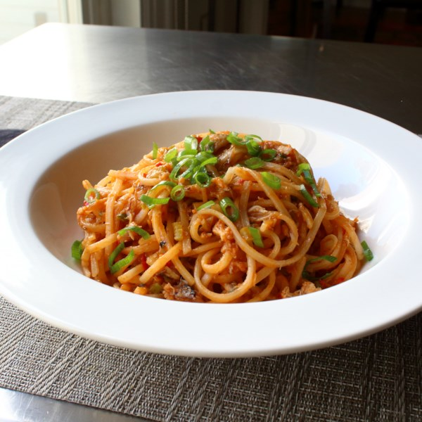

Creole Crab Noodles

Description
Here's some flavorful fusion food for Mardi Gras! "Crab, and its old friends, the Holy Trinity, are a classic combo, and so it was no surprise they worked so well in an Asian-style rice noodle dish – an experiment gone right. Garnish with sliced green onion," says Chef John
Ingredients
- Garlic [3 cloves, crushed]
- Ketchup [3 tbsp]
- Rice Vinegar [1/4 cup]
- Soy Sauce [1 tbsp]
- Fish Sauce [1 tbsp, Optional]
- Hot Sauce [1 tbsp]
- Paprika [1 tsp]
- Cayenne Pepper [1/2 tsp]
- Ground Cumin [1 tsp]
- Rice Noodles [8 oz]
- Vegetable Oil [2 tbsp]
- Celery [1/3 cup, diced]
- Red & Green Jalapeno [1/3 cup, minced]
- Green Onions [1/3 cup]
- Crabmeat [1/2 lb]
Steps
- Whisk garlic, ketchup, rice vinegar, soy sauce, fish sauce, hot sauce, paprika, cayenne pepper, and cumin together in a bowl.
- Place rice noodles in a large bowl; cover with boiling water and stir with tongs. Let soak for 10 minutes.
- While noodles soak, heat vegetable oil in a pan over medium-high heat. Cook and stir celery, jalapenos, and green onions until tender and fragrant, about 10 minutes.
- Drain noodles and place in the pan; add the sauce and crabmeat. Cook and stir until noodles are coated evenly and everything is heated through, 2 to 3 minutes.
Reference